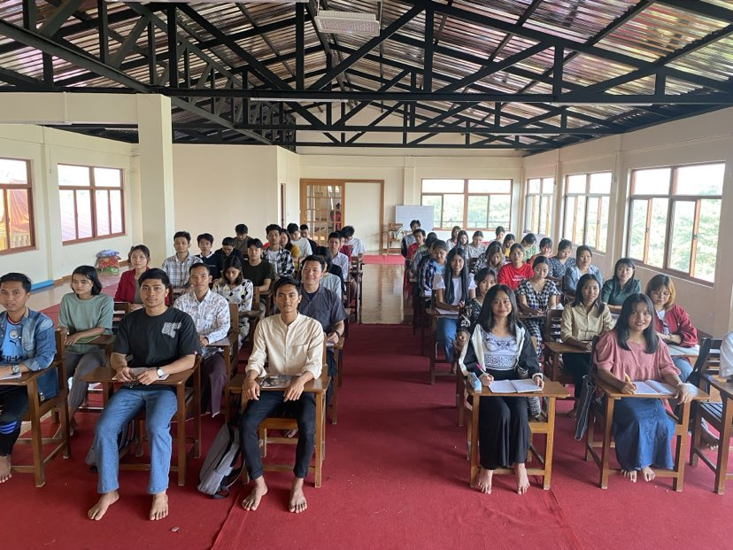
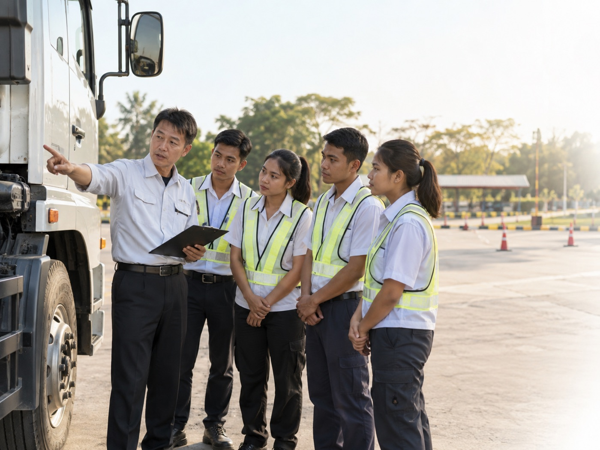

言葉の壁
交通ルールや学科試験、配送先で必要な日本語を理解できるのか。
TRANSPORT INDUSTRY × MYANMAR
紹介するだけではない。
ミャンマーで「ドライバーを育てる」ところから。
About us
GMIは、ミャンマー政府公認の送り出し機関です。自社の日本語学校と現地の運転教育体制を起点に、来日前から日本で働くための準備を開始します。
来日後の外免切替、試験対策・同行、企業への配属、そして配属後の日本語教育と母国語での定着支援まで。すべての段階で、私たち自身が現場に関わります。
EDUCATE IN MYANMAR. GROW IN JAPAN.
Problem
採用前から配属後まで、企業様が感じる不安はつながっています。
交通ルールや学科試験、配送先で必要な日本語を理解できるのか。
日本の道路環境や、大型車両を想定した技術を身につけられるのか。
右ハンドルに日常的に慣れている日本と同じ右ハンドル車が主流のミャンマーでは、走行車両の約85%が日本からの中古車です。多くのドライバーが日常的に右ハンドルで運転しているため、日本の車両感覚にスムーズに適応できます。
複雑な手続きと試験対策を、企業の負担を抑えて進められるのか。
仕事や生活の不安を抱え込まず、安心して長く働き続けられるのか。
Total Support
「ワンストップ」という言葉だけではなく、7つの工程すべてに自社の支援があります。
来日してから準備を始めるのではなく、ミャンマーにいる時から、日本で働く準備を始めます。
Training in Myanmar
日本語学校と運転教育。その二つをミャンマー現地で動かしているから、採用前から一人ひとりの学び方や運転適性を把握できます。

交通ルール、標識、学科試験、運行指示、配送先での会話まで、就労を想定した日本語を教育。

ミャンマーで走る車の約85％は右ハンドルの日本車。
日常的に右ハンドルに触れている土壌の上で、独自の教習環境と現地の大型バス会社との連携により、大型車両を想定した教育を来日前から実施。
来日後の外免切替と配属を支え、長距離・短距離の運送現場での活躍へつなげます。
License Support
下見は、実技合格のための重要な事前対策。
受験者本人と一緒に、何度もコースを歩く。下見できる朝7時と昼12時の限られた時間を最大限活用し、確認ポイントや試験で求められる動作を一つずつ確認。本番の運転を頭の中で再現するイメージトレーニングまで繰り返します。
「試験を受けさせる」だけではなく、
「合格するために、できることを全部やる。」
Results
外免切替は、決して簡単な試験ではありません。
ミャンマーで事前に学科対策を行い、来日後すぐに受験準備へ。
現地教育と日本での実技訓練、徒歩下見、試験同行を実施。
※警察庁公表の2025年10〜12月の外免切替実績：知識確認42.8％、技能確認13.1％
※掲載数値はGMI提供の実績値です。
After Assignment
免許取得はゴールではなく、日本の運送現場で長く活躍するためのスタートです。
その週に現場で分からなかった言葉や指示を振り返り、働きながら日本語力を高めます。
ミャンマー時代から本人を知る先生だから、仕事や生活の本音を話しやすい。知らない担当者には言えない小さな不安も拾います。
ヒアリング内容を整理して共有し、問題の早期発見と職場環境の改善につなげます。
Comparison
一般的な支援例と、GMIの一貫プログラムの対応範囲を比較しました。
| 比較項目 | 一般的な支援例 | GMI |
|---|---|---|
| 現地日本語教育 | 基礎的な日本語教育 | 自社校で運送業務に特化 |
| 現地運転教育 | 外部連携の場合がある | 独自環境＋大型車両を想定 |
| 外免切替・試験対策 | 手続き案内・部分支援 | 学科・実技・下見・同行 |
| 配属後日本語教育 | 支援内容により異なる | 週1回継続 |
| 母国語ヒアリング | 担当者による面談 | 本人を知る元先生が担当 |
| 定着支援 | 相談対応・生活支援 | 本音を把握し企業へ還元 |
※「一般的な支援例」は支援会社により内容が異なります。特定企業との比較ではありません。
For Partners
GMIの支援はドライバー人材だけにとどまりません。外国人ドライバーの育成・送り出しで培ったノウハウを活かし、運送業界に関わる周辺分野へも支援領域を広げています。
※2026年9月現在
ドライバー採用を起点に、整備・倉庫まで。
運送業界全体の人材課題に対応できるパートナーへ。
Company
ミャンマーと日本を、人でつなぐ。
Contact
「どんな人材を育成しているか知りたい」「免許取得の進め方を相談したい」
「登録支援機関・人材紹介会社として連携したい」といった段階からご相談いただけます。